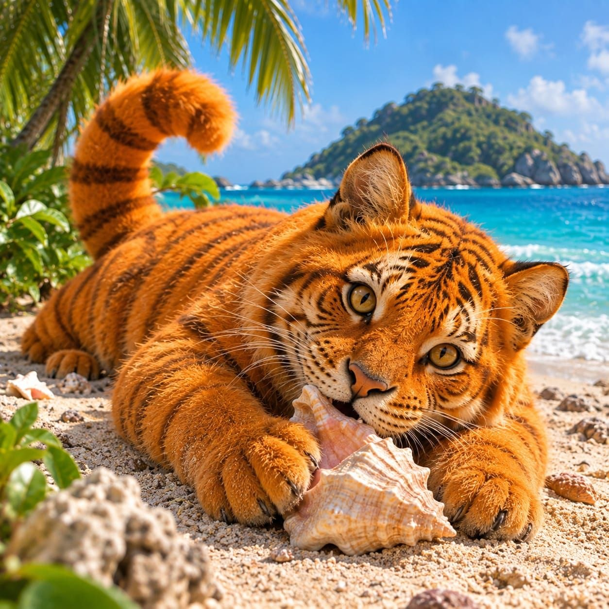
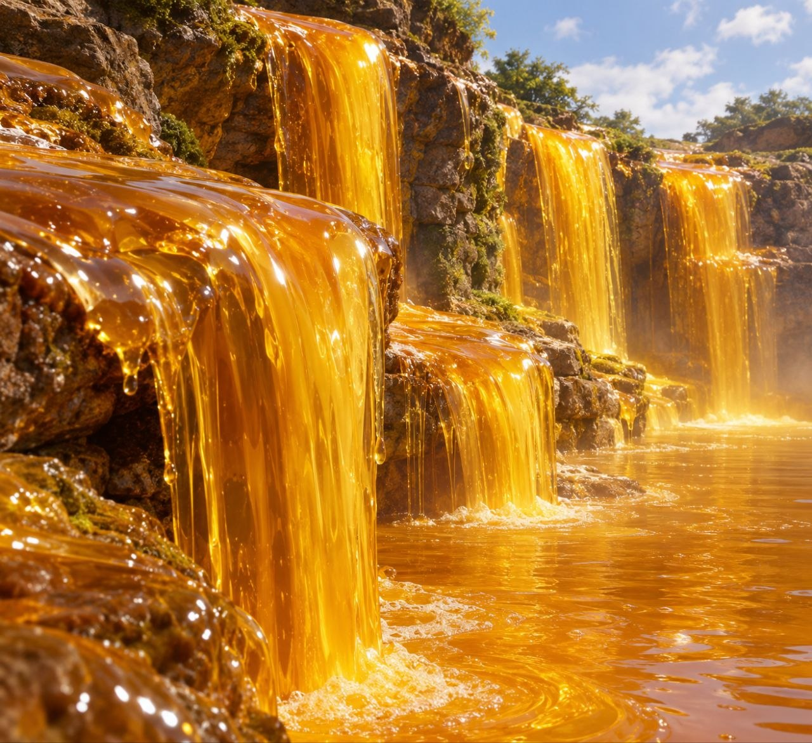

¿Qué es Cataratas de Miel?
Las Cataratas de Miel es un lugar ubicado en una isla al Oeste del Caribe.
Clima cálido y con una flora y fauna tropical
alucinante. Encontraras diversas especies de aves, reptiles y mamíferos
Hogar del famoso "Gato Calabaza", un felino unico en el mundo, que solo se encuentra en esta isla.
Conocido por su característico tamaño, y color semejante al de una calabaza.
Pocas veces sale a la superficie, ya que,es el único animal que inverna casi las 4 estaciones del año.

¿Qué hacer en Cataratas de Miel?
En Cataratas de Miel, hay muchas actividades acuaticas para realizar.
Ya que cuenta con una gran cantidad de playas, y lugares naturales para visitar.
podrás disfrutar de excursiones a la famosa Cascada de Miel, y de la selva de pastas
y visitas a los pueblos de gengibre donde se ubica el lago de Chocolate.

Se caracteriza Por:
- Posee una flora y fauna tropical alucinante
- Es el hogar del "Gato Calabaza"
- Hay aves, reptiles y mamíferos
- Tiene muchas Playas
- Cuenta con actividades acuaticas
- Tiene selva y lugares naturales